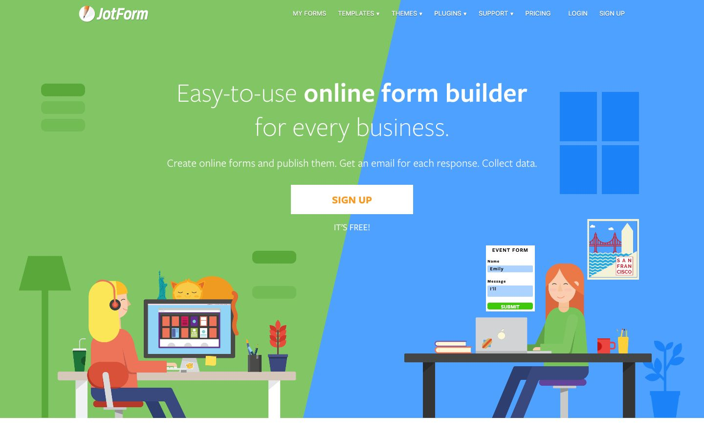

References / Website / 222
JotForm website, 2018
JotForm’s 2018 home page: two flat figures work at desks on a hero split diagonally into flat green and blue fields.
- Source
- JotForm (archived copy)
- Creator
- JotForm
- Made
- 2018 (Wayback capture of 1 September 2018)
- Style
- Corporate Memphis (agent-proposed, not yet reviewed by a person)
- Moods
- Cheerful, busy, friendly
- Evidence
- Captured with
tools/capture.mjs(headless Chrome, 1440 × 900) on 28 September 2026 and inspected. No cookie box covers the page. The screenshot shows the first viewport; the measurement covers up to four screens. - Reviewed
- Rights
- Third-party work, stored with credit for commentary. License: unverified. Rights policy
The live JotForm site has changed since this 2018 capture.
Observed
- The hero is split diagonally into a flat green left side and a flat blue right side.
- A light-weight white heading reads “Easy-to-use online form builder for every business.”, with a square white “SIGN UP” button with orange text.
- At the bottom left, a woman with yellow hair and a headset works at a monitor; an orange cat sleeps on top of it, and a small Statue of Liberty stands behind.
- At the bottom right, a red-haired woman sits at a laptop next to a large “EVENT FORM” card and a San Francisco poster.
- Everything is drawn in flat fills without outlines or texture; a floor lamp, plants, and blue window panes are simple geometric shapes.
Why it belongs
The page shows the flat office-scene genre that ran alongside Corporate Memphis. It shares the flat fills and props but not the distorted figure.
Borrow
Split a hero into two flat color fields and give each side its own figure, to show two roles (the form maker and the form filler).
Measured
Machine-extracted by tools/extract-traits.js on . Full measurement.
- Type families
- freight-sans-pro (92%), -apple-system (8%)
- Type scale ratio
- 1.18
- Median radius
- 0 px
- Mean chroma
- 0.21
- Palette
- #ffffff 45%
- #81c564 18%
- #4ea1ff 17%
- #000000 11%
- #3c3c3c 4%
- #1b83f7 2%
- #a2a2a2 2%
- #f2f2f2 1%

